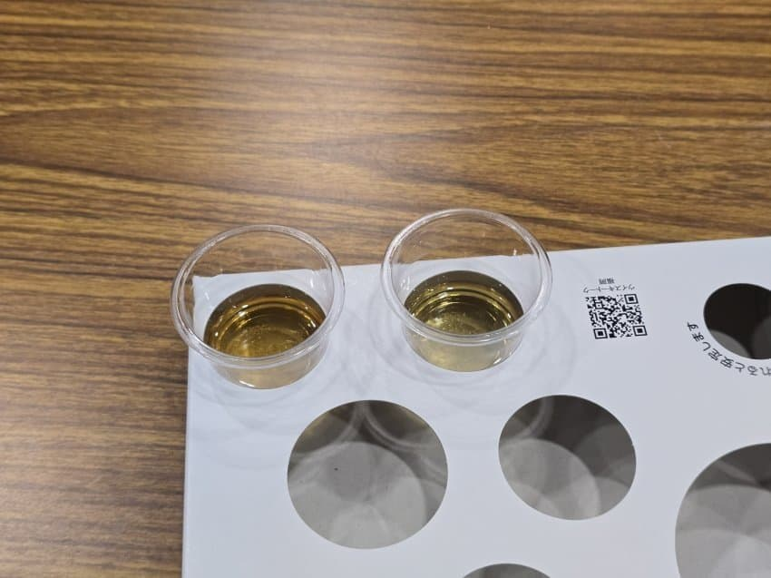
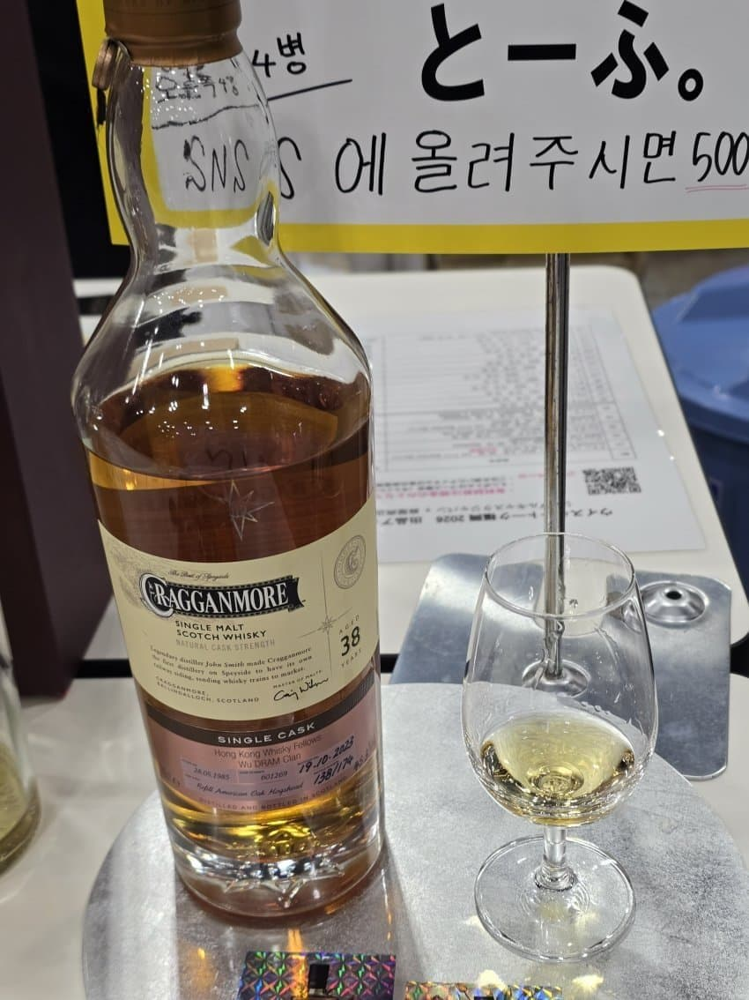

신도 와인캐 샘플
스파이시, 향신료, 카라멜리, 달고 맵다
신도 피티드 럼캐 샘플
화사하면서 옅은 청사과, 향은 달달한데 맛이 살짝 드라이하다

크라겐모어 cod 38년
약간의 비린내, 전형적인 버번캐, 숙성감이 느껴지긴 하는디 복합미가 부족함

스뱅12 세라믹
은은한 펑크와 크리미, 감칠맛, 뚝 끊기는 편이긴 하고 볼륨감이 낮긴 하지맘 무난히 맛잇다
글렌모레이 1962
약한 카라멜리, 옅은 꿀과 하얀색 꽃, 전반적으로 여리여리하다, 향신료, 약간의 탄닌
발베니 30년
생각보다 맛이 세고 볼드하다, 캐라멜리한 셰리 허브 향신료 그리고 전반적으로 매운 감도 좀 있다.
꿀과 흰 꽃의 향도 조금 느껴지는 편이다. 크리미하고 탄닌의 텁텁함으로 마무리
고마가타케 30년
약간의 알싸함과 함께 소다 같은 향이 난다. 30년 셰리 숙성임에도 굉장히 청량하고 아까 말했던 소다 같은 향과 살짝의 실키함, 왁시함이 더해져 밀키스가 연상된다.
적당한 탄닌감, 소다, 셰리의 캬라멜리가 적절하게 어우러진다.
댓글 2개